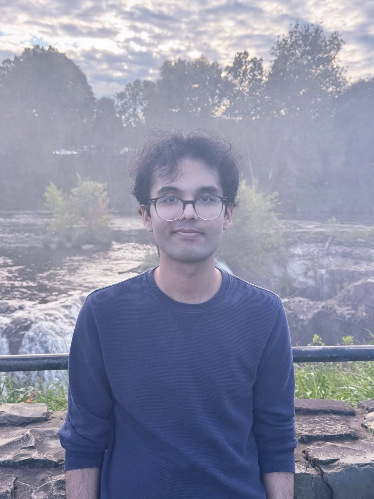
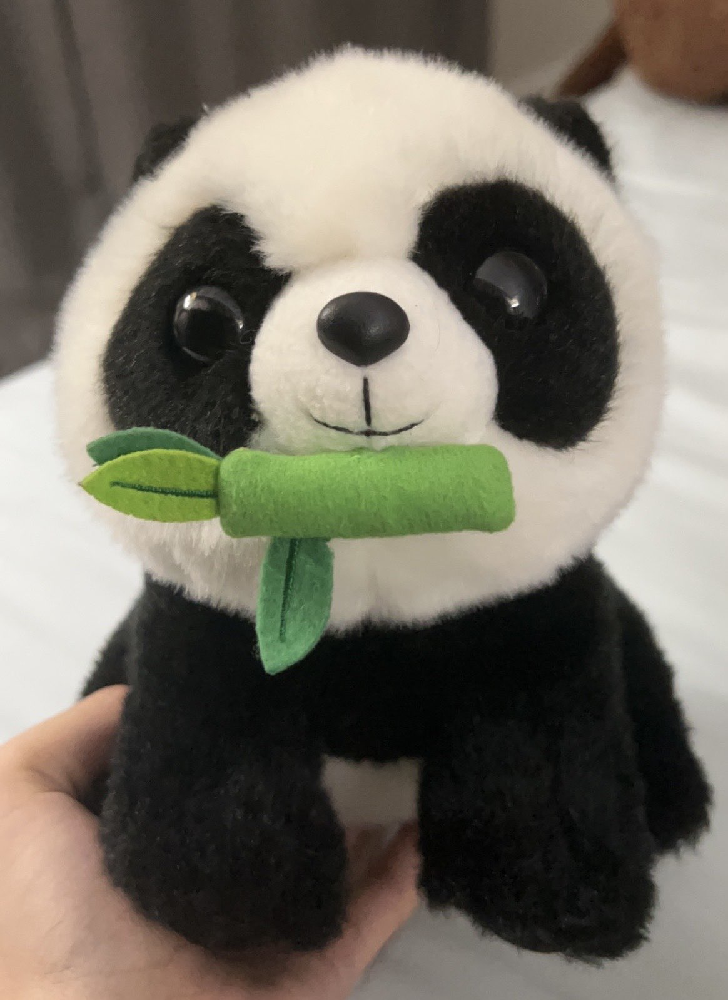
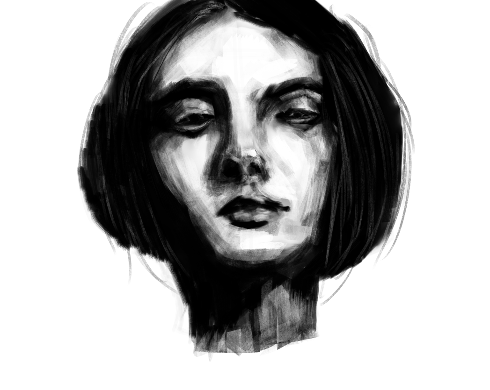

Astrophysics & Data Science
Satyajit “Chris” Gade
I like Data Analysis and Computational Astrophysics
I am interested in astrophysical research and computation. I have worked primarily on simulating lens systems and I have built machine learning models that attempt to understand the physics behind those systems.
See my workHire meThe sky and my photo sit behind a gravitational lens. Move your mouse to bend them, or click anywhere for a gravitational ripple.

Work I've done as a researcher...
- Gravitational lens modeling: SIS, SIE and external shear
- Shear and ellipticity drawn from Oguri & Marshall (2010)
- MCMC with emcee, Honors in Astronomy, Paul Robeson Scholar
- Contributed talk at Rutgers, March 2025
Work I've done as a data nerd...
- Keras, TensorFlow, PyTorch and scikit-learn
- Datasets of 300,000 to 1,000,000 samples
- HPC with SLURM on Rutgers’ Amarel cluster
- Held-out tests, residual and Q-Q diagnostics
I work on both halves together, so every model is checked against the physics it is meant to capture.
Chapter 1 · Who I am
The person behind the models
My name is Satyajit, and most people call me Chris. I graduated from Rutgers–New Brunswick with Honors in Astrophysics, a minor in Mathematics, and a thesis on applying machine learning to gravitational lens modeling.
I'm now looking for entry-level roles in astrophysics research and data science, where I can put data-driven methods to work on hard problems.
Outside of coding and research, I spend my time listening to music, drawing, and gaming. When working, I research alongside my panda plush, Dr. Bubbles, who keeps me focused even during times of stress. I also frequent MeeTu and Utepia for bubble tea where I get an iced shaken matcha or strawberry matcha.

Education
M.S. Data Science
Monroe University, New Rochelle, NY. Started September 2026.
B.S. Astrophysics, Honors
Rutgers University, 2021–2025. Thesis: Applying Machine Learning to Gravitational Lens Modeling. Honors in Astronomy, SAS Paul Robeson Scholar, Dean’s List (Fall 2021, 2023, 2024).
Toolkit
Languages
Python, SQL, MATLAB, Bash, LaTeX, Mathematica
Machine learning
TensorFlow, Keras, PyTorch, scikit-learn, feature engineering, hyperparameter tuning, cross-validation
Statistics
Hypothesis testing, residual analysis, MCMC with emcee, Monte Carlo
Data and compute
pandas, NumPy, SciPy, Astropy, Matplotlib, Git, Linux, SLURM
Chapter 2 · My work
Teaching networks to learn physics.
Two years of gravitational lens modeling at Rutgers, from thesis to cluster-scale simulation.
Post-Baccalaureate Researcher
Rutgers Physics & Astronomy · Sep 2025 – Jun 2026
- Scaled mock-lens generation from a laptop to the Amarel cluster with SLURM job arrays: 300,000 raw systems (100,000 each of SIS+shear, SIE and SIE+shear), curated to 79,398 shear-model systems with a magnification threshold.
- Designed three Keras networks matched to lens multiplicity (4-, 7- and 13-feature inputs), trained with Adam, batch normalization and early stopping to a best validation loss of 0.0032 and MAE of 0.045 in 94–139 epochs.
- Tested a network trained on one lens model against another and measured the drop to MAE 0.85–0.92, marking the limit of transfer across the isothermal family.
- Built diagnostics (residual histograms, Q-Q plots, skew tests) and rotation and translation augmentation.
Undergraduate Student Researcher
Rutgers Physics & Astronomy · Sep 2024 – May 2025
- Built a Python pipeline on the group’s gravlens library, drawing shear and ellipticity from Oguri & Marshall (2010) distributions for 9,000 simulated lenses across three isothermal models.
- Mapped correlations across five lens parameters in corner plots, showing the learnable structure that motivated the neural network approach.
Contributed talk
Rutgers Physics & Astronomy · March 2025
- Presented the full pipeline, from dataset generation to validation, to faculty, postdocs and students.
Chapter 3 · My Personal Projects
Case studies
Open a case study to see the question, the method and the result. The first two are my research; the others show the same habits on other problems.
Lens modeling at scale
Can a neural network recover lens parameters from simulated lensed systems? Keras, SLURM, gravlens.
+
The question
Can neural networks learn to recover lens parameters from simulated lensed systems, and how far can that be trusted?
The approach
Simulated lenses with the group’s gravlens library, scaled to the Amarel cluster with SLURM job arrays, then trained three Keras networks matched to lens multiplicity (4-, 7- and 13-feature inputs to 3, 6 and 12 outputs).
The result
Best validation loss 0.0032 and MAE 0.045 in 94–139 epochs, checked with residual histograms, Q-Q plots, skew tests, and rotation and translation augmentation.
Where the network stops generalizing
A cross-model test that defined the transfer limit across isothermal lenses.
+
The question
How far does a network trained on one lens model carry over to another?
The approach
Trained on SIS+shear systems, then tested on SIE systems from the same isothermal family, using the same residual and Q-Q diagnostics.
The result
Error rose from an MAE of 0.045 to 0.85–0.92, which defined the transfer limit across the isothermal model family.
Physics as a validation set
A projectile network checked against the closed-form solution.
+
The question
Does a neural network recover known physics, rather than just fit data?
The approach
A three-hidden-layer (64-neuron, ReLU) Keras regressor trained on 1,000,000 simulated trajectories to predict range from velocity and launch angle.
The result
Validated on 100,000 held-out trajectories against the kinematic solution: R² of 0.9999 and MAE of 0.86 m, converging in 10 epochs.
What makes a track popular
Exploratory analysis of 586,672 Spotify tracks in pandas.
+
The question
What separates the most popular tracks from the rest?
The approach
Cleaned a Kaggle dataset, engineered a year field, and compared 736 top-tier tracks (popularity above 80) with 585,936 others across six audio features using box plots, KDEs and a heatmap.
The result
Acousticness (r = −0.37) and loudness (r = 0.33) correlated most strongly with popularity, reported as correlation only.
Lorentz transform visualizer
A Matplotlib animation of length contraction and time dilation as observers approach light speed.
Solar system simulator
An N-body simulation of the solar system with accurate orbital mechanics and adjustable parameters.
Chapter 4 · Collaboration Opportunities
Let’s work together
I’m looking for entry-level roles in astrophysics research and data science, and for collaborations in computational astrophysics. Pick the path that fits and the email opens ready to send.
Hire me
Data science, machine learning or research roles.
Collaborate
Computational astrophysics, lens modeling, or machine learning for physics.
Request my resume
I’ll send you the latest version.
Or write to me directly. Based in New Jersey, studying for an M.S. in Data Science at Monroe University.
satyajitlion@gmail.com* Personal life
Some Games I like
- Undertale
- Deltarune
- Warframe
- Clair Obscur: Expedition 33
Songs I like
- Waterfall by Toby Fox (Undertale OST)
- Lotus Eaters by Matthew Chalmers, Keith Power, and Adrian Bott (Warframe OST)
- Nos vies en Lumière by Lorien Testard and Alice Duport-Percier
Other Hobbies
- Drawing
- Photography
- Messing around in FL Studio
* Things I have drawn



Background Art & Song Credit to Toby Fox and Temmie Chang.